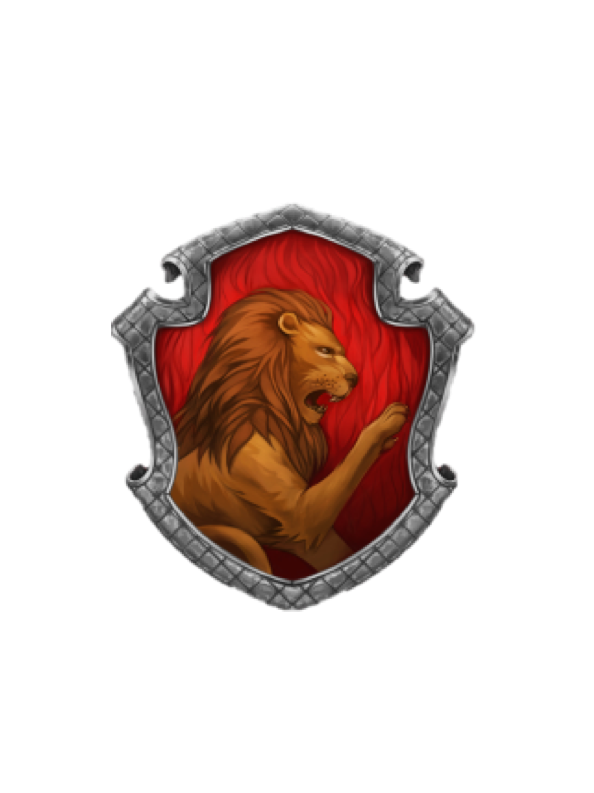
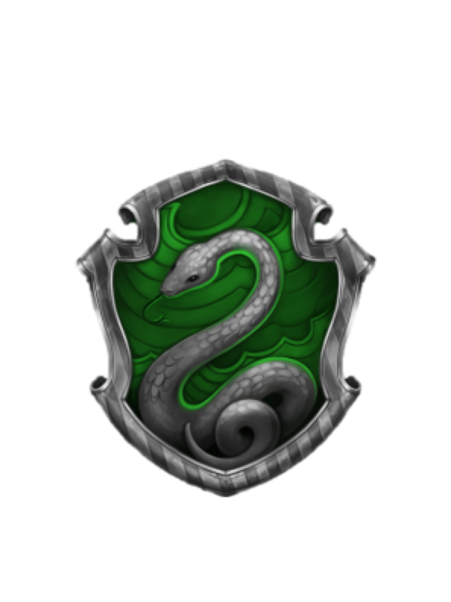
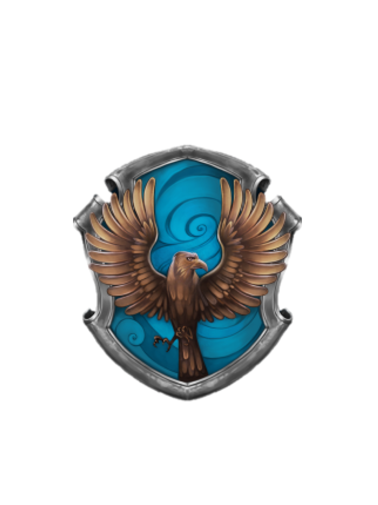
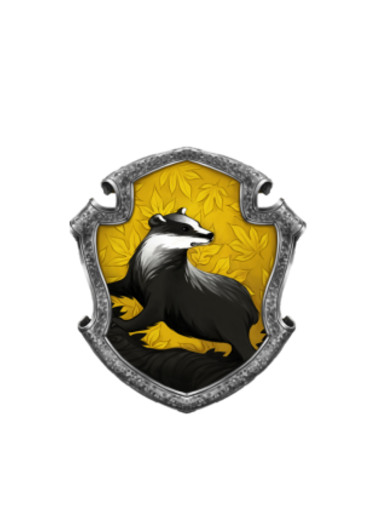

Факультеты Хогвартса— четыре отделения школы чародейства и волшебства Хогвартс в которые учеников отбирают по складу характера. Они названы именами основателей Хогвартса, которые, собственно, и завели такой порядок отбора. Факультеты эти: Гриффиндор, Пуффендуй, Когтевран и Слизерин.Определяет учеников на тот или иной факультет раcпределяющая шляпа, некогда снятая с головы одного из основателей Хогвартса Годрика Гриффиндора и заколдованная таким образом, чтобы определить черты характера новоприбывшего ученика.
После распределения факультет становится для ученика «второй семьёй»: он живёт в одной из факультетских спален, делает уроки в факультетской гостиной, его успехи приносят очки родному факультету, а за проступки — эти очки отнимают. Добиться победы своего факультета в конце учебного года в межфакультетском соревновании — цель для всех учеников.
Гриффиндор
" Дом Годрика Гриффиндора пользуется уважением всего мира уже десять столетий, и я не допущу, чтобы вы за один вечер опорочили это имя, ведя себя, как плоховоспитанные, малосоображающие грубияны "
- Отличительное качество учеников этого факультета: храбрость, благородство, честность
- Основатель: Годрик Гриффиндор
- Призрак: Почти Безголовый Ник
- Животное: лев
- Магические предметы, связанные с основателем факультета: меч Гриффиндора, Распределяющая шляпа
- Гостиная Гриффиндора: вход находится за портретом Полной Дамы, Гриффиндорская Башня — одна из самых высоких в замке.
Слизерин
" Слизерин брал таких же, как он, хитрецов, Безупречных, к тому же, по крови "
- Отличительные качества учеников этого факультета: хитрость, умение добиться своей цели любым способом.
- Основатель: Салазар Слизерин
- Призрак: Кровавый Барон, который при жизни любил Елену Когтевран
- Животное: Змея
- Магический предмет, связанный с именем основателя факультета: Медальон Слизерина
- Гостиная Слизерина: низкое длинное подземелье со стенами из дикого камня, камин украшен искусной резьбой, с потолка на цепях свисают зеленоватые лампы. Вход — сквозь голую стену в одном из подземных коридоров. При названии пароля часть стены уходит в сторону
Когтевран
" Все, что мы теряем, обязательно к нам вернется, только не всегда так, как мы ожидаем "
- Отличительное качество учеников этого факультета: острый ум и индивидуальность
- Основатель: Кандида Когтевран
- Призрак: Серая дама
- Животное: орёл
- Магический предмет, связанный с именем основателя факультета: Диадема Кандиды Когтевран
- Гостиная Когтеврана: расположена в одноимённой башне, откуда открывается изумительный вид на окрестности замка
Пуффендуй
" Помните Седрика. Если настанет время сделать выбор между легким и правильным, вспомните, что случилось с честным, добрым, смелым мальчиком только потому, что он случайно встал на пути Лорда Волан-де-Морта. Помните Седрика Диггори "
- Отличительные качества учеников этого факультета: трудолюбие, терпение, верность, честность
- Основатель: Пенелопа Пуффендуй
- Призрак: Толстый Монах
- Животное: барсук
- Предмет, связанный с основателем факультета: Чаша Пенелопы Пуффендуй
- Гостиная Пуффендуя: вход в гостиную Пуффендуя – через портрет рядом с кухней. Это очень уютная и гостеприимная комната. Множество желтого вокруг, глубокие кресла, небольшой туннель, ведущий в спальни, которые имеют круглые двери, как днище бочки